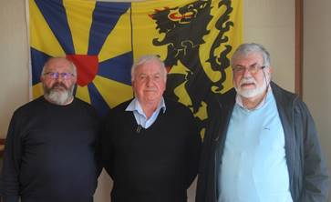
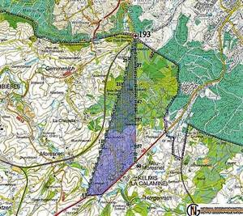
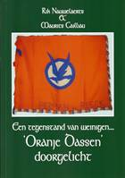
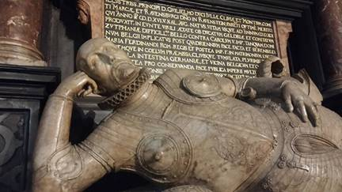

> nieuwsbrief > 36e
jg. - 2e trimester 2018
Hernieuwen
ledenbijdrage voor 2018
De
penningmeester dankt voor de vlotte wijze waarop gehoor
gegeven werd aan zijn verzoek tot vereffening van de bijdrage
voor 2018. De “nalatigen” kunnen hun verzuim alsnog
herstellen. Even ter herinnering: de bijdrage voor het in mei
2018 te verschijnen nieuwe Jaarboek De Nederlanden ‘extra muros’ en
voor de driemaandelijkse Nieuwsbrief Zannekin
beloopt 29 €. Vanaf 35 € wordt u met dank als steunend lid
geboekt. Men kan daartoe enkel nog gebruik maken van
ons ‘Belgische’ zogenaamd ‘Europees’ rekeningnummer iban BE13 4648 2202 5139 – bic: KREDBEBB waarvan de
rekeningoverzichten ons dagelijks meegedeeld worden.
Hernieuwd
verzoek
Onze Zannekin-Nieuwsbrief
verschijnt slechts driemaandelijks. Mochten onze leden en
belangstellenden ons massaal hun e-postadres willen meedelen,
dan wordt het ons mogelijk hen ook tussentijds te bereiken
teneinde hen vlotter te informeren omtrent de op stapel
staande activiteiten en andere initiatieven die in het
verlengde daarvan liggen. Wil ons daarom uw e-adres meedelen
via een kort berichtje aan maurits.cailliau@skynet.be
met als boodschap: ’interesse in Zannekin’. Een honderdtal
leden deden dit al, waarvoor dank. Deze hernieuwde oproep is
dan ook gericht tot hen die dit tot nog toe nalieten te doen.
Studie-uitstap Watten-Noordpeene 28 april
Onze
voorjaarsactiviteit behelst andermaal een bus excursie die ons
naar de Frans-Vlaanderen zal brengen, waar in 1677 aan de voet
van de Casselberg de noodlottige veldslag geleverd werd ten
gevolge waarvan deze contreien bij Frankrijk ingelijfd werden.
We bezoeken er het ‘Huis van de Veldslag’ en wandelen een
korte etappe mee - tot aan de obelisk die herinnert aan de
veldslag - met de jaarlijkse voettocht doorheen het toenmalige
slagveld. In Noordpene staan we ook even stil aan het graf van
de legendarische Tisje-Tasje en het recent gerestaureerde graf
van Lodewijk de Baecker.
Vooraf
bezoeken we in Watten de abdijruïnes, de kerk en
het graf van de Frans-Vlaamse voorman priester Jean-Marie
Gantois, die 50 jaar geleden overleed en op wiens graf
de Vereniging/Stichting Zannekin destijds een gedenksteen
aanbracht waarop de Leo Belgicus of Nederlandse Leeuw prijkt,
gebeiteld door Willem Vermandere.
Dagindeling
Vertrek bus om 07.45 uur: te
Mark/Edingen, Dorpstraat 94 (vóór de Cardinael) en om 08.30
uur: Doornik station NMBS
09.45 uur: Ieper station NMBS,
Colaertplein
11.15 uur: Watten:
Bezoek graf van Jean-Marie Gantois, kerk en abdijruïnes;
Middagmaal in de Auberge
Flamande
13.30 uur: Watten –>
Noordpeene
14.00 uur: Noordpeene:
bezoek Museum van de Slag bij de Peene, de graven van
Tisje-Tasje en van L. de Baecker, wandeling naar de obelisk
16.30 uur: Verbroedering
en vieruurtje in de parochiezaal
Terugreis om 17.30 uur:
Noordpeene – Cassel – Ieper
Ieper: 18.30 uur –
Doornik: 19.45 uur - Mark/Edingen: 20.30 uur
Aanmelden en
betalen
Aanmelden
kan op het secretariaatsadres tot uiterlijk 23 april via
e-post maurits.cailliau@skynet.be
, met gelijktijdige betaling van 60 € (leden) of 65 € (niet
leden) op rekening IBAN: BE13 4648 2202 5139 BIC: KREDBEBB
t.n.v. Zannekin, Paddevijvertraat 2, B. 8900 Ieper, met opgave
van opstapplaats. Dit bedrag omvat de reiskosten, het
middagmaal, het vieruurtje en de gidsing.
Deze zal
doorgaan op zaterdag 6 oktober 2018 te Ravestein
bij Nijme-gen. Alhoewel de aanleiding tot de ‘Vrede van
Nijmegen’ (1678) uiter-aard al aan bod zal komen tijdens onze
Studie-uittap, zal op deze dag het bredere plaatje geschetst
worden die tot deze vrede aanleiding gaf. Op deze dag dient
men wel – als traditioneel voor onze Ontmoetings-dagen – op
eigen houtje heen. Over deze activiteit uiteraard ruimere info
in onze volgende Zannekin
Nieuwsbrieven.
MET Leo Camerlynck op Rondreis naar
Oost-Europa - RONDREIS
OOST-EUROPA
BERLIJN, KRAKỞW, AUSCHWITZ, PRAAG, NÜRNBERG
Data: 29 juli t.e.m. 7 augustus
2018
reisprogramma
Locaties: Berlijn –
Krakόw –
Auschwitz – Praag.
Vervoer
per luxe-autocar (lederen interieur, eigen beeldscherm met
media op verzoek, WiFi (indien dekking provider): ontbijt op
de autocar bij vertrek, 2 chauffeurs op dag 1, 1 chauffeur
rest van de reis, begeleiding op de autocar.
·
alle
overnachtingen zijn inclusief ontbijt
·
avondmaal op
dag 1, dag 3, dag 4, dag 6, dag 7
·
begeleiding
van eigen gids gedurende de volledige reis
·
geleid
stadsbezoek aan Berlijn, Krakow, Praag
·
begeleide
wandeling Potsdam, Cottbus, Marienbad
·
bezoek Wawel
Krakow
·
bezoek
Auschwitz met gids
·
bezoek
Parteigelände Nürnberg
·
bezoek
gerechtsgebouw Nürnberg
PRIJS PER
PERSOON tweepersoonskamer:
999€
Eénpersoonskamer
op aanvraag: 321 € opleg.
NIET
INBEGREPEN: de overige
maaltijden en dranken, persoonlijke uitgaven, toeristentaks,
andere bezoeken en entreegelden, annuleringsverzekering,
bijstandsverzekering.
Inschrijven
en betalen voor 9 april 2018 bij Belltours info@belltours.be
met kopie aan leo.camerlynck@skynet.be.
Adres Belltours: Bergensesteenweg 772, B.1600
Sint-Pieters-Leeuw, tel. 0032 2 356 63 50. Rekening: IBAN:
BE82 7765 9536 3768, BIC: GKCCBEBB, met vermelding: Reis naar
Midden-Europa, juli-augustus 2018.
Alle
bijkomende informatie bij Leo Camerlynck, E. Michielstraat 51,
B.1180 Ukkel, tel. 00 32 485 630 227, e-post leo.camerlynck@skynet.be
Er worden verschillende op- en afstapplaatsen
in België, Nederland en Duitsland ingebouwd.
Programma
dag 1 • zondag 29 juli
Vertrek
te Sint-Pieters-Leeuw om 05:00 richting Berlijn. Via het
Ruhrgebied, Porta Westfalica, Hannover zetten we koers
richting Berlijn. Onderweg houden we enkele stops langs de
snelweg. In de namiddag stoppen we zo onder andere op de
parking te Marienborn waar vroeger de toegang tot de DDR werd
geregeld. Een deel van de installaties van toen zijn nog te
bezichtigen. Bij aankomst in Berlijn houden we een
oriënterende stadsrondrit waarbij we al enkele van de
bezienswaardigheden van deze stad ontdekken. Aankomst in
Hotel, avondmaal (inclusief) en overnachting: Hotel Tryp by Windham Berlin City East
dag 2 • maandag 30 juli
Op de
2e dag van onze rondreis bezoeken we een ganse dag het centrum
van Berlijn. In de
voormiddag gaan we met onze gids op stap en bezoeken onder
meer de Alexanderplatz, Fernsehturm, Checkpoint Charlie,
Brandenburger Tor, Reichstag, Holocaustmonument. Vrij
middagmaal in het Sony Center waarna u de keuze hebt om een
boottocht te maken op de Spree of op eigen houtje de stad
verder te verkennen. Onze gids kan u oriënteren richting uw
favoriet bezoek. Vrij avondmaal en overnachting in Berlijn: Hotel Tryp by Windham Berlin City East
dag 3 •
dinsdag 31 juli
We
verlaten Berlijn en zetten verder koers naar het oosten. We
beginnen onze dag met een bezoek aan Potsdam en het
kasteel Sans Souci. Rond de middag begeven we ons naar de
Hollandse wijk te Potsdam voor een vrij middagmaal in de
‘Vliegende Hollander’. Na de middag zetten we koers richting
het Spreewald met onderweg een stop te Babelsberg voor een
bezoek aan de Defa-studio’s. Hier werden de fameuze
propagandafilms geproduceerd. Tijdens ons vrij bezoek aan Burg
in het Spreewald kan u rustig kuieren langsheen de waterlopen
of op eigen initiatief een kanovaart maken. In de late
namiddag zetten we koers naar Cottbus voor avondmaal
(inclusief) en overnachting: Hotel Radisson blu Cottbus
dag 4 • woensdag 1 augustus
Na het
ontbijt verlaten we Cottbus en zetten koers richting Krakow.
Onderweg houden we halt te Wroclaw, een mooie universiteitsstad met het
hoogst aantal studenten Nederlands in midden en Oost-Europa.
Vrij middagmaal in Wroclaw. In de namiddag zetten we onze weg
verder richting Krakow voor overnachting en avondmaal
(inclusief). Hotel Polonia Krakow
dag 5 • donderdag 2 augustus
Bezoek
Krakόw met een
begeleide stadswandeling. Vrij middagmaal in de stad, na de
middag bezoeken we de Wawel en krijgt u nog voldoende vrije
tijd om de stad op eigen houtje te verkennen. Vrij avondmaal,
overnachting in Krakow: Hotel Polonia Krakow
dag 6 • vrijdag 3 augustus
Vroeg
uit de veren, vandaag om 09:00 uur worden we verwacht aan het
concentratiekamp Auschwitz
/Birkenau voor een bezoek onder leiding van een lokale
gids. Na dit bezoek zetten we koers naar Wilamowice, het
Vlaamse dorp in Silezië. Bezoek onder leiding van onze eigen
gids. We zetten onze weg verder richting Olomouc voor
avondmaal en overnachting: Hotel Business Hotel Alley
dag 7 • zaterdag 4 augutus
Na het
ontbijt begeven we ons richting Brno (Brünn) de
hoofdstad van Moravië. Korte begeleide stadswandeling. Na de
middag zetten we onze weg verder richting Praag voor avondmaal
en overnachting: Hotel U Med-vidku
In Praag, geleid
stadsbezoek in de voormiddag, met de Sint-Vitusdom, de Burcht,
de Karelsbrug met een beeld van de Heilige Lutgardis, het
Týnplein, het Wenceslasplein, Zlata Praha /Die goldene Stadt,
Kafka’s erfenis, de Joodse begraafplaats. Vrije tijd in de
namiddag. Vrij avondmaal. Overnachting: Hotel U Medvidku
dag
9 • maandag 6 augustus
Ontbijt,
via Pilsen naar Marienbad
voor een wandeling door het kuuroord. Hierna richting Nürnberg
met bezoek aan bezoekerscentrum Parteigelände. Vrij avondmaal
en overnachting in Nürnberg: Hotel Park Plaza Nürnberg
dag 10 • dinsdag 7 augustus
Bezoek
bezoekerscentrum gerechtsgebouw in Nürnberg. Hierna
richting Sint-Pieters-Leeuw met stopplaatsen onderweg.
VERTREK-
EN AANKOMSTPLAATSEN
Sint-Pieters-Leeuw
kantoor Bell Tours, Halle GB & Station, Anderlecht Bizet,
Eindhoven en andere op- en afstapstapplaatsen mits overleg.
Op het YouTube-kanaal met onderstaande
‘link’ publiceert Mark Ingelaere regelmatig zijn interviews in
de streektaal met Frans-Vlamingen. In deze uithoek van
Frankrijk, diep verscholen in de weidse Westhoek wonen de
'echte' schatbewaarders van de Nederlandse taal. We nodigen
alle lezers uit kennis te nemen van zijn voortreffelijk werk!
https://www.youtube.com/watch?v=FdCoU1vf3qA
Frans-Vlaanderen
streektaal opname 142 Mark Ingelaere 16-9-2017
|
|
CASSEL
(Frans-Vlaanderen)
Op zaterdag 17 februari 2018 werd Leo
Camerlynck geïnterviewd over Het Nederlands in de Wereld &
Nederlandse woorden in diverse talen, door Radio Uilenspiegel
 V.l.n.r.:
Michel Lieven, Karel Appelmans, Leo Camerlynck
Neutraal Moresnet en Esperanto
Rudi Koot
Tijdens onze Ontmoetingsdag in het
najaar van 2017 naar Eupen, Vaals en het destijdse Neutraal
Moresnet, onderhield ons bestuurslid Rudi Koot ons over het
fenomeen dat in dit laatste gebied het Esperanto ooit de
gangbare taal was. De schriftelijke neerslag van z’n
toelichtingen leest u hieronder.

Kaartje van het gebied, waarbij de pijl
middenin het kaartje het eertijds neutraal gebied van
Moresnet weergeeft
In 1906 ontmoette de Duitse arts en locoburgemeester Wilhelm
Molly de Esperantist Gustave Roy. Molly zag in de opkomst van
de kunsttaal Esperanto een mogelijke nieuwe bestaansreden voor
het land en samen poogden ze van Neutraal Moresnet de eerste
Esperantostaat van de wereld te maken.
Het plan werd door de inwoners met
enthousiasme ontvangen en Neutraal Moresnet werd omgedoopt tot
Amikejo ("plaats van vriendschap"), compleet met eigen
volkslied (de Amikejo-mars). In de overtuiging dat het
Esperanto na verloop van tijd wereldwijd aan zou slaan was het
plan om alle inwoners van Neutraal Moresnet binnen tien jaar
Esperanto te laten spreken. De uitvinder van het Esperanto,
Lejzer Zamenhof, gaf zijn goedkeuring aan het project. Vanaf
1907 werden er lessen gegeven in Esperanto; in 1908 spraken
140 inwoners (3 tot 4% van de totale bevolking) Esperanto. Op
13 augustus 1908 wist Roy op het Esperanto-Wereldcongres te
Dresden een overtuigende steun te verkrijgen voor de
verplaatsing van het Centrale Bureau van de Esperanto-beweging
van Genève naar Kelmis. Eveneens zou het eerstvolgende
Esperanto-Wereldcongres aldaar plaatsvinden.
Het Centrale Bureau van de
Esperanto-beweging kwam beide plannen uiteindelijk niet na;
mogelijk werd men afgeschrikt door mogelijke diplomatieke
heisa en werden Duitse Esperantisten door hun regering
beïnvloed. In Neutraal Moresnet kelderde het enthousiasme voor
het Esperanto onmiddellijk.
______________
Bron: https://nl.wikipedia.org/wiki/Neutraal_Moresnet
Informatie: Amikejo. Documentaire over Neutraal
Moresnet. Nederlands ge-sproken met Esperanto ondertitels
(12:07)
https://www.youtube.com/watch?v=AgkyvZ2QRwM
Brochure:
“Esperanto” (2011) – Centrum voor Mondiaal Onderwijs (CMO): http://www.cmo.nl/pdf/smo/esperanto.pdf
Vereniging
Esperanto Nederland: http://www.esperanto-nederland.nl/ned/index.php
Vlaamse Esperantobond vzw: http://www.esperanto.be/fel/nl/index.php Literatuur: Philip
DRÖGE: Moresnet, Opkomst en ondergang van een
vergeten buurlandje, 2016. David van Reybrouck:
Zink, 2016.
Een keur van gedichten in Heel-Nederlandse geest
In 2015 deed de VVNA (Vereniging van
Vlaams-nationale auteurs) een oproep om gedichten in te
sturen n.a.v. het 2e eeuwfeest van het Koninkrijk
der Verenigde Nederlanden. Door de plotselinge opheffing van
die vereniging in de loop van datzelfde jaar kreeg dit
project nooit gestalte. Hieronder brengen we vier van de
destijds ingestuurde gedichten, die passen binnen het
Zannekin-perspectief en aldus eindelijk alsnog aan
publicatie toekomen.
Geboortegrond
In mijn jeugd en jonge jaren,
toen de tijd nog niet bestond,
mocht ik spoedig al ervaren
liefde voor mijn geboortegrond.
Eerst het vredig dorpje, waar
ik eens argeloos ben geboren,
dan de streek en de stad daar
aan de stroom met trotse toren.
Daarna werd `Vlaanderen mijn land'
later nog, alweer ruimere verbanden,
Oranjes droom mij in 't harte geplant
of Willem I's ene `oude Nederlanden'.
Rik
Nauwelaerts
Als
één voor één de grenzen vallen
Als één voor één de grenzen vallen
En alle bruggen open gaan,
De wachters op de oude wallen
De grendels van de poorten slaan;
Als Munster, Wenen en Versailles
Staatkundig worden bijgesteld
En op de keerzij der medaille
De volkeren in eer hersteld;
Als Noord en Zuid de handen reiken -
Frans-Vlaanderen als vrij gewest -
En samen naar de toekomst kijken
Als Nederlands Gemenebest;
Als Suriname en Antillen,
Zuid-Afrika naar eigen aard
De band der taal behouden willen
waardoor de eenheid wordt bewaard;
Dan wordt vervuld in al zijn glorie
Het eeuwenoude Prinsenwoord
Dat in de maalstroom der historie
Niet steeds door allen werd gehoord.
Dus, grijp uw kans, o Nederlanden,
Duw weg de knoet en werp het af
Het juk van vreemde dwingelanden,
Ontdoe u van de bedelstaf.
Verhef dan 't vaandel der sinjeuren
Op ied're toren, elk gebouw
De geuzenvlag, de prinsenkleuren,
Het oud oranje-blanje-blauw.
Marc van
Caelenberg
Mijn
land
Vlaanderen! Vroeg heb ik u bemind.
Reeds als kind keek ik op naar uw
vaandel,
zong ik uw liederen, heb ik de faam
van uw kunstenaars gehoord in de wind.
O! Ik was jong in uw zon en uw schaduw,
sneeuw in de winters, eindeloze zomers,
met één boterham 's morgens, een
bekervol water
en de karige kost van de oorlogsjaren.
Vlaanderen, ik heb uw leed en uw lijden
gezien;
de terreur van de Staat met
mishandeling en moord
tienduizenden opgesloten, mishandeld,
beroofd.
's Nachts hoor ik de stem van de doden.
Uit vreemde landen, in ballingschap
heb ik u brieven vol heimwee
geschreven.
Gekruisigd volk, beschimpt en
geschonden,
machteloos heb ik u liefgehad.
Vlaanderen en Nederland! Hart en hoofd.
Een vreemde Staat heeft ons beiden
verminkt.
Eén land en één volk, nooit-vergeten
droom;
Heel-Nederland, gaaf en sterk en
schoon!
Vecht u dan vrij uit ketens en knel
met de moed van de Leeuw,
met het hart van een kind!
Bestrijd de macht van een rovend Bewind
opdat dit volk, na slaafsheid en waan,
zichzelf-als, Kracht-om het Vaandel
vindt.
Vlaanderen, vroeg heb ik u bemind...
Aleidis
Dierick
Kort
verenigd en weer gescheiden
Het Frans gespuis
dat d’oude Nederlanden
met veel wapengedruis
in rampspoed deed belanden
ruimt eindelijk baan
voor Noord en Zuid tesaam.
Maar franskiljonse drijverijen
beletten ’t Verenigd Nederland
verder te gedijen
en vestigen met geweld
een onrechtstaat
die aan het Vlaamse volk
geen ruimte laat.
Yvo Peeters
Over de Heel-Nederlandse Jeugdbeweging
Voornamelijk het Algemeen Diets
Jeugdverbond (adjv)
– en ruimer de nationale jeugdbeweging in haar brede
verscheidenheid na de Tweede Wereldoorlog – was tot op heden
tot tweemaal toe het thesis-onderwerp van een universitaire
studie.
De eerste studie was deze van Marijke
van Hoorebeeck, waarvan in 1986 de boekuitgave verscheen bij
de toenmalige Uitgeverij De Nederlanden en die Oranje Dassen 1944-1961
– Geschiedenis van het Algemeen Diets Jeugdverbond tot titel kreeg.
Zij studeerde in 1984 af aan de Leuvense universiteit, met
Louis Vos als promotor van haar licentiaatsverhandeling.
De tweede studie op universitair niveau
was deze van Jeroen Belis die in het academiejaar 2005-2006
aan de Antwerpse universiteit afstudeerde met zijn
licentiaatsthesis De
Vlaams-nationalistische jeugdbewegingen voor en na de
Tweede Wereldoorlog - Doorstart of nieuw begin? En waarvan de
professoren Herman van Goethem en Frans-Jos Verdoodt de
promotoren waren.
Al bij het verschijnen van de
boekuitgave van Marijke van Hoorebeecks ‘Oranje Dassen’ werd
menig voorbehoud geformuleerd, vooral dan vanuit de Antwerpse
scene die wat de destijdse medespelers betrof al teveel buiten
beeld gebleven was.
Bleef de controverse wat Van Hoorebeeck
betreft destijds voornamelijk beperkt tot een te eenzijdige
raadpleging van haar woordvoerders, dan gaat deze met
betrekking tot de studie van Jeroen Belis wezenlijk dieper
voor wat zijn besluitvorming betreft, namelijk dat de
naoorlogse nationale jeugdbeweging veeleer een “doorstart” dan
wel een “nieuw begin” betrof. Het auteurs-duo dat in deze
uitgave – die ‘Oranje Dassen’
doorgelicht tot titel kreeg - aan het woord komt
behoorde tot de geëngageerde medespelers van destijds binnen
het toenmalige speelveld. Hun overwegingen en bedenkingen bij
de lectuur van beide universitaire scripties berusten op hun
proefondervindelijke ervaringen omtrent de toenmalige
ontwikkelingen binnen de jeugdbeweging. Beide thesissen kunnen
ze daardoor slechtst als dusdanig – namelijk: “stellingen” –
zien, die in heel wat nood hebben aan tegenstellingen of
antitheses. Rik Nauwelaerts nam het op zich om in een eerste
hoofdstuk ‘Oranje
Dassen’ van Marijke van Hoorebeeck kritisch te
benaderen. Zijn bevindingen zijn heel wat van vlakken
verhelderend en dragen ertoe bij tal van aspecten uit te
diepen en breder te verduidelijken. Maurits Cailliau weet in
het tweede hoofdstuk heel wat in het werkstuk van Jeroen Belis
te waarderen, maar weerspreekt resoluut diens doorstart-these
en brengt tal van gegevens aan die veeleer pleiten voor een
nieuwe aanvang – dan wel “nieuwe wijn in oude zakken” voorop
te stellen. Deze nieuwe uitgave – waarvan de vendelvlag van
het Antwerpse Herman
van den Reeck-vendel de voorkaft siert - telt 144
pagina’s en is ruim geïllustreerd met zowel kleur- als
zwart-wit afbeeldingen. De aankoopprijs is 20 € (verzendkosten
inbegrepen), met de vermelding ‘Oranje Dassen doorgelicht’
over te boeken op rekening IBAN: BE74 0001 5866 3607 t.n.v.
Stuurgroep Oud-adjv,
Paddevijverstraat 2, 8900 Ieper. Het nieuwe boek is een
uitgave van de Stuurgroep Oud-adjv.
ARNHEM - Omroep Gelderland en de
Radboud Universiteit Nijmegen gaan de krachten bundelen om de
eeuwenoude verbondenheid tussen de regio's te onderstrepen in
een nieuwe unieke televisieserie over het Hertogdom Gelre.
Gelderlanders wonen allemaal in gebieden die in de
middeleeuwen behoorden tot het roemruchte Hertogdom Gelre, de
directe voorloper van de provincie Gelderland. Programmamaker
en historicus René
Arendsen doet de research voor de nieuwe televisieserie over
het Hertogdom Gelre. 'Wie zich verdiept in de middeleeuwse
geschiedenis van Gelderland wordt geraakt door een spannend
sprookje over machtige vorsten, rijke steden en dappere
ridders. Het verhaal van het Hertogdom Gelre is alleen nog
nooit verteld als spannende thriller.'
Ook hoogleraar Gelderse geschiedenis
Dolly Verhoeven werkt mee aan de serie. 'Het is de bedoeling
dat we het historisch onderzoek dat de redactie doet ook
gebruiken voor het overzichtswerk van de Gelderse geschiedenis dat ik
voorbereid. Gelderland is één van de weinige provincies zonder
een recent boekwerk over de provinciale geschiedenis.' 'De
research van de televisieserie kan een goede basis zijn voor
de hoofdstukken vanaf het jaar 1000 tot 1800. Geschiedenis
moet verteld worden als een spannend verhaal.'
De nieuwe televisieserie over het
Hertogdom Gelre is een vervolg op de twee seizoenen Ridders
van Gelre die Omroep Gelderland de afgelopen jaren maakte. Bas
Steman is één van de Ridders. Hij gaat samen met Ridder René
op speurtocht naar het hertogdom Gelre. 'Ik wil nog niet te
veel verklappen, maar de Ridders worden dit jaar op pad
gestuurd door één van hun grote helden.' René Arendsen
verklapt ook nog dat wordt gekeken naar de mogelijkheden voor
een stripboek over het Hertogdom. Op 25 september was de eerste
aflevering te zien bij Omroep Gelderland.
Marten Heida
Ze kwamen in Emden
bijeen om te gedenken
Op zo'n grote toestroom van
belangstellenden voor deze grensoverschrijdende bijeenkomst
hadden de inrichters niet gerekend. Alle beschikbare plaatsen
in de Johannes a Lasco Bibliotheek in Emden waren dan ook
bezet. Met intense aandacht werd geluisterd naar wat de vier
sprekers naar voren brachten over de stormvloed die in de
nacht van 24 op 25 december 1717 het kustgebied van Fryslân,
Groningen en Oost-Friesland teisterde. In met name in
Oost-Friesland en de aangrenzende regio's vielen veel
slachtoffers te betreuren; hun aantal wordt op bijna 7000
geschat. Oneindig veel groter was het aantal dieren dat in
deze Kerstnacht het leven liet; hun aantal benadert het getal
100.000. En dan hebben we het nog niet eens over het aantal
verwoeste huizen en de aangerichte schade aan de
infrastructuur.
Na het openingswoord van de
Landschaftspresident Rico Mecklenburg werd het woord gevoerd
door de Nederlandse weerkundige Ton Lindeman. Hij belichtte
allereerst de meteorologische achtergronden. Daarna ging hij
in op de oorzaken als gevolg waarvan deze ramp zo'n omvang kon
krijgen. In dit verband wees hij op de veel te lage dijken die
bovendien ook nog slecht onderhouden waren. Bovendien waren ze
als gevolg van de overvloedige regenval doorweekt geworden
waardoor de beschermende functie sterk verminderd was.
Na hem was de beurt aan dr. Paul
Wessels, historicus en directeur van de Landschaftsbibliotheek
te Aurich. Hij besteedde met name aandacht aan de uitwerking
en de gevolgen van de Kerstvloed voor Oost-Friesland. In dat
kader citeerde hij pastor Johann Christian Hekelius uit
Resterhafe. In diens in 1719 verschenen omvangrijke
beschrijving van de gebeurtenissen staat ondermeer te lezen:
"Er kann wohl keine Not auf der Welt grösser sein als solche
Wassersnot." Vervolgens stond hij stil bij zowel de
dramatische lotgevallen als de reddingspogingen. Hij was zeer
duidelijk over de houding van de mensen in de kustplaatsen.
Hun werd verweten dat ze in die orkaannacht rustig waren gaan
slapen terwijl het tegendeel het geval was; ze waren juist
waakzaam gebleven.
Opnieuw kwam een Nederlander voor het
sprekersgestoelte te staan. Dr. Hidde Feenstra uit het
Groningse Warfum liet zijn gehoor weten dat in de Nederlandse
provincies Fryslân en Groningen - die toch beide ook zwaar te
lijden hadden gehad - in vergelijking met Oost-Friesland
nauwelijks iets in het geheugen is blijven hangen. Volgens hem
heeft dat te maken met de watersnoodramp van 1 februari 1953.
De
laatste spreker was prof. Frank Thorenz die verbonden is aan
het Niedersächsischen Landesbetrieb für Wasserwirtschaft,
Küsten- und Naturschutz. Hij maakte de balans op van de stand van
zaken met betrekking tot de huidige bescherming van het
kustgebied van Oost-Friesland. In dit verband verwees hij naar
de klimaatsverandering en de stijging van de zeespiegel.
Afsluitend stelde hij: "Wij moeten met de onzekerheid leven
dat we niet nauwkeurig weten wat er komt."
Bron: Ostfriesland Magazin,
2018/1
Marten Heida,
Prins Willem Alexanderpark
53,
NL-3905 CB
Veenendaal
Gun de taalgrens door België wat rust
In 1962-63 werd de eeuwenoude
taalgrens tussen het Dietse en het Romaanse taalgebied
vastgelegd in de Belgische Grondwet. In de volgende
Nieuwsbrief leest u het interview uit ‘De Tijd’ van
25/01/2005, waarin ook naar dit historisch feit verwezen
werd. Na meer dan een halve eeuw heerst er vrede en peis
aan beide zijden van de Vlaams-Waalse scheidingslijn. Maar
dat was in het verleden weliswaar niet altijd het geval.
Voeren en Komen haalden vaak de krantenkoppen. Ook kwam
het tot heibel in bepaalde faciliteitengemeenten rond
Brussel-Hoofdstad. In de periode rond de vastlegging van
de taalgrens ontstond het begrip “faciliteiten”. Kort
samengevat betekent dit dat Franstaligen in
Nederlandstalige én Duitstalige faciliteitengemeenten hun
administratieve documenten rechtsgeldig in het Frans
kunnen ontvangen, alsmede andersom. Nederlandstaligen
mogen hun ambtelijke documenten in het Nederlands opeisen
in administratief Franstalige faciliteitengemeenten.
Duitstaligen kunnen dat ook in twee Waalse
faciliteitengemeenten.
Als het erop aan komt faciliteiten aan
te vragen, dan aarzelen Franstaligen geen seconde.
Nederlandstaligen missen een flinke dosis assertiviteit in
zoverre dat ze schoorvoetend vragen waar ze recht op hebben.
Nog steeds durft slechts de helft van de Vlamingen in de
Franstalige faciliteitengemeenten hun documenten zoals
identiteitskaart, paspoort en andere administratieve papieren
in het Nederlands aan te vragen. Het vergde jaren alvorens
Franstalige lokaliteiten zoals Komen-Waasten en Vloesberg de
taalwetten toepasten. Stilaan kwam er beterschap maar de
kennis van het Nederlands in postkantoren, gemeentediensten,
banken mag beslist nog wat beter. In het straatbeeld valt er
daarentegen steeds meer Nederlands te bespeuren.
Sinds enkele maanden is er een oproep
van bepaalde Vlaamse politici om de faciliteitenregeling in
het Oost-Vlaamse Ronse en het Vlaams-Brabantse Bever ongedaan
te maken. Gaat het hier om een profileringsdrang of om een
gemeende bekommering. In beide entiteiten zorgen Franstaligen
in tegenstelling met de zes randgemeenten met faciliteiten
rond Brussel niet echt voor problemen. Deze eis zorgt voor een
omgekeerd effect. Toen de burgemeester van het Henegouwse
Vloesberg dit bericht hoorde, dreigde hij ter stond met
maatregelen om in zijn faciliteitengemeente de
gunstmaatregelen voor Vlamingen terug te schroeven. Actie
reactie en de mallemolen begint opnieuw te draaien.
Beter ware meer toezicht uit te oefenen
op de correcte toepassing van de taalfaciliteiten voor
Nederlandstaligen in Edingen, Komen-Waasten, Moeskroen en
Vloesberg dan onhaalbare eisen te stellen zonder dat er een
grondwetsherziening bij te pas komt.
Gun de doorgaans mooie landschappen aan
beide zijden van de taalgrens een welverdiende rustige blik.
Leo N.J. Camerlynck
voorzitter Stichting Zannekin
Edouard Michielsstraat 51,
1180 Ukkel / Brussel
e-post: leo.camerlynck@skynet.be
celfoon: 00 32 485 630 227
{kind=link}
{kind=link}
{kind=link}
{kind=link}
{kind=link}